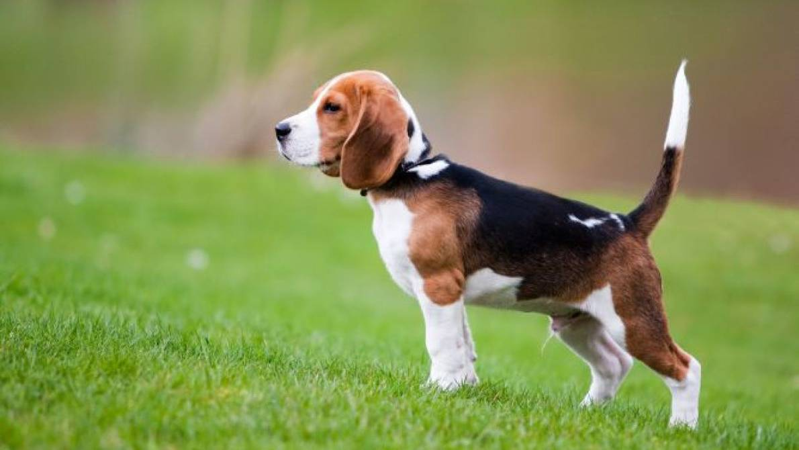

Las razas de perros mas conocidas

Pastor alemán
Es una raza canina que proviene de Alemania.
Ver más
Husky siberiano
Es una raza de perro de trabajo originaria del
noreste de Siberia.
Ver más

Beagle
son una raza de perro de tamaño pequeño a
mediano.
Ver más
Pomeranian
Es una raza canina de la familia Spitz
Ver más

Labrador retriever
Es una raza canina originaria de Terranova, en la actual
Canadá.
Ver más
Bulldog Ingles
Es una raza canina originaria del Reino Unido.
Ver más
Poodle
Es una raza canina que hasta el siglo XV se
consideró de uso exclusivo de los
aristócratas y nobles.
Ver más
Chihuahua
Es una raza de perro originaria de México.
Ver más
Shiba Inu
Es el más pequeño de las seis originales y diferentes
razas de perro de Japón.
Ver más